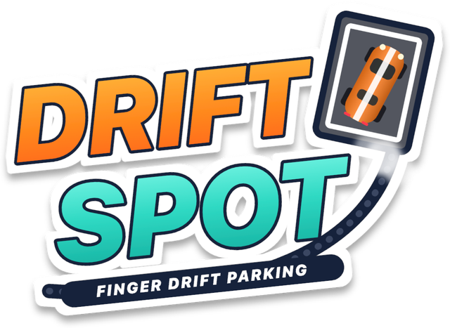

Hold to drive, let go to drift it into the spot. Questions, problems or feedback.
Email yicokocak@hotmail.com and I'll reply personally. If something isn't working, please mention your iPhone model and iOS version.
Hold anywhere on the screen to drive. Let go to pull the handbrake and drift. Time your release so the car slides sideways and stops inside the parking box. The better it fits, the more stars you get. Three stars is a PERFECT park.
Park in the box to open the next level. Each car is a chapter that gets harder level by level, from the Go Kart all the way to the Rocket Car.
Every run uses one fuel, and you start with 20. When you run out, you can watch a short video ad to refuel: the first ad of the day gives 20 fuel and every ad after that gives 15. If no ad is available, you get 10 fuel for free. Unlimited Runs is a one-time purchase that removes the limit and the ads.
Open Settings on the main menu (the gear) and tap Restore purchase, using the same Apple ID.
Tap the trophy on the main menu to open the Trophy Room. It shows how far you've driven and drifted, your best streaks and more. Achievements are in Game Center, so sign in to Game Center on your iPhone to earn them.
If you're in a region where consent is required, open Settings on the main menu and tap Privacy choices.
Read the Privacy Policy.